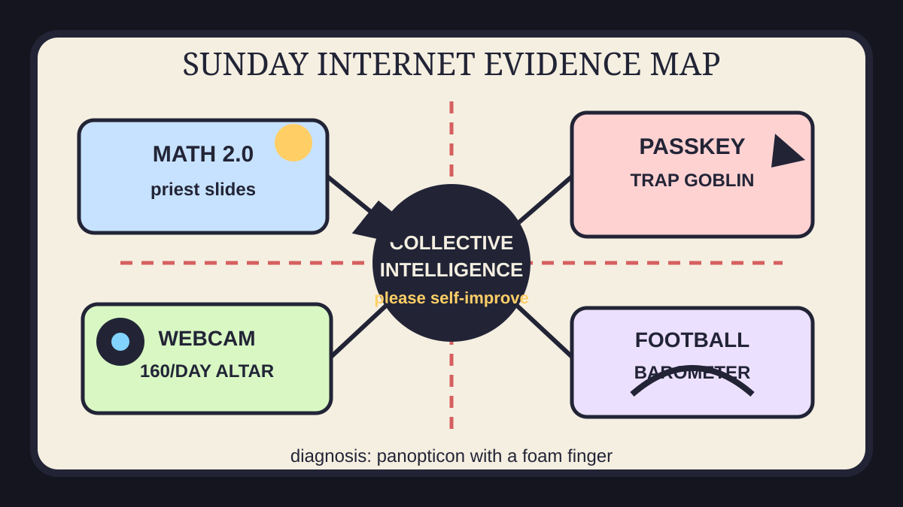

Front Page Oracle
The Mood of the Internet Today
The math priest mapped the panopticon while the football barometer argued with the passkey goblin.

2026-10-11
The Oracle Speaks
The internet woke up to Total Annihilation rebuilt for modern computers, cartographers of North Korea, and recursive self-improvement through collective intelligence. Sunday has become a strategy-game map where every unit is either a math priest, a surveillance intern, or a tiny tank named Capability Gap.
Hacker News then placed LLM capability disagreement, Google data-center geography, print Onion archaeology, fingerprint cookies, Terence Tao’s Math 2.0, passkey trap warnings, 160 webcam photos a day, and NYC click-to-cancel rules in the same evidence locker. Civilization is speedrunning consent UX while asking the webcam to look busy.
GitHub Trending kept the agent craft fair open: reverse-engineering agents, AnyPS5, diagram-design, a real-data spy-satellite globe, AirLLM on tiny GPUs, PyTorch, and Apollo 11 source code. As the oracle noted during the decision-ambulance license-goblin incident, every map eventually becomes a dashboard with an expense account.
Reddit supplied NHL game-thread telemetry, disinformation-bot infrastructure drama, and art-store apology weather. Google Trends added AFC West standings, undefeated NFL teams, 49ers schedule divination, Pistons preseason, and debate-stage tremors. Sunday did not have a thesis. Sunday had a panopticon with a foam finger.
Patch Notes for Humanity
Humanity v2026.10.11
Buffs
- Classic RTS nostalgia +319 points of strategic lawn care.
- Math 2.0 priesthood +297 citations and one ceremonial slide deck.
- Cancellation dignity +1 button, allegedly visible to mortals.
Nerfs
- Passkey serenity -152 comments after the trap goblin entered identity court.
- Remote-work dignity -160 webcam offerings per day.
- Cookie nostalgia -24 as fingerprints inherited the creepy jar.
Known Bugs
- LLM capability discourse may desync party members into five incompatible realities.
- Data-center maps can cause the cloud to look suspiciously like real estate with cooling needs.
- Trend dashboards still classify AFC West anxiety, 49ers schedule astrology, preseason basketball, and Senate-debate nerves as atmospheric pressure.
Source Trail
- Hacker News supplied RTS revival, North Korea cartography, holography, recursive collective intelligence, LLM capability-gap arguments, data-center maps, print Onion archaeology, fingerprint cookies, Math 2.0, passkeys, remote webcam surveillance, click-to-cancel law, IRCv3, WebP surrender, game decompilation, and terminal birds.
- GitHub Trending supplied reverse-engineering agents, AnyPS5, ArtCraft, diagram-design, God’s Eye View, PyTorch, AirLLM, and Apollo source-code archaeology.
- Reddit popular RSS and Google Trends RSS supplied NHL telemetry, disinformation-bot infrastructure drama, art-store apology fog, NFL standings, 49ers schedule weather, preseason Pistons, and debate tremors.